Chapter 10 of 10
People of Aethelguard
The people of Aethelguard each have a past. Return what they lost and they will follow you into the dark.
Companions and keepsakes
Every townsperson lost something before you arrived. These keepsakes turn up very rarely in boss loot and treasure chests. Some are more likely from particular foes, such as Sister Elara’s prayer beads from the undead. The item’s description hints at its owner. Bring it to them, and they will join you as a companion.
- Only one companion follows you at a time. Talk to them to send them home, and visit them at home to bring them along again.
- Companions grow from the fights you share, up to level 10. Each level makes them hit harder and faster.
- Murdering anyone in town turns every companion away from you forever.
The town square
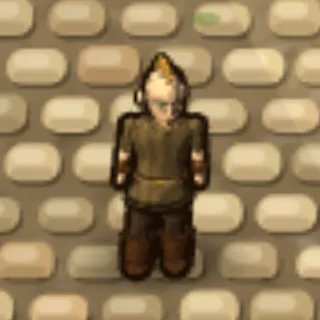
Pip the Urchin
“Pip. Orphan, sort of. I sweep the square for coppers and watch heroes come and go.”
Pip was left as a baby by the fountain with a locket around his neck, which was stolen during his first winter. He is full of advice about selling orc ears and not dying.
Keepsake: Tarnished Locket
A dented brass locket with a faded portrait of a smiling woman holding a baby.
“That’s my mum… I’m coming with you. I’m small. They won’t even see me. And I’ll nick better things off them than whatever they drop when they die.”
As a companion, Pip sneaks up on monsters and steals from them, then slips the loot into your hand.
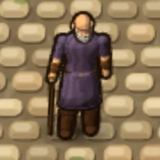
Old Wynn
“Old Wynn. Sixty years telling tales of this isle. Some are even true.”
The town’s storyteller knows the history of every lair and hero. He lost his life’s work, a chronicle of forty years of tales, the night orcs raided the road.
Keepsake: Water-stained Chronicle
A thick hand-bound book of tales, its pages crowded with tiny handwriting about the isle’s heroes.
“I’m too old to fight, but not to walk. Let me come along. I’ll tell you the tales as we go, and write yours down while I’m at it.”
Wynn does not fight. Ask him for a story and he will tell you about Gnarlfang’s bullied youth, the priest who became Lich Morthal, the day Mick robbed the royal vault and gave it all back, and more.
Shop, temple and forge
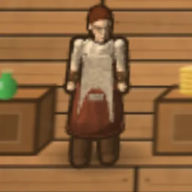
Mara the Merchant
“Mara. I hauled spice caravans until orcs took my wagon. Now I sell to those brave enough to take the road back.”
Mara buys every scrap you bring and sells the gear, potions and pickaxes you need.
Keepsake: Scorched Caravan Bell
A painted brass wagon bell, its paint scorched, stamped with a spice merchant’s mark.
“My lead wagon’s bell! I’d know that ring in my sleep… The shop can mind itself while I’m out. I still remember how to use one of these. Shall we?”
She fights from range with a sling and throws you a healing draught when you are badly hurt.
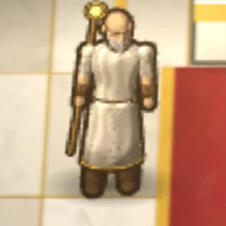
Brother Aldric
“Brother Aldric. I once carried a sword. Now I carry only prayers. The Light forgave what I could not.”
A former knight who took holy vows the same week the Warlord’s first raid came. He heals, blesses and accepts donations.
Keepsake: Knight’s Oathblade
A plain, well-kept longsword whose pommel oath has been scratched out.
“I buried that blade beneath a cairn the day I took my vows… Perhaps the Light returns it for a reason. I will walk with you and mend what the dark breaks. And if I must, I will lift this again.”
He fights in melee and his prayers mend your wounds.
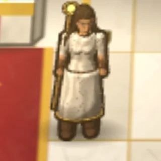
Sister Elara
“Sister Elara. I tend the shrine and the wounded. My brother never returned from the Crypt.”
Elara prays for the restless dead beneath the hills. Her brother Tomas went into the Forgotten Crypt and never came home.
Keepsake: Crypt-worn Prayer Beads
Temple prayer beads, cold to the touch, one bead carved with a little sun and the letter T.
“Tomas… I carved that sun for him when we were children… Then let me finish what he started. The Light burns hottest in grief, and the dead will feel it.”
She strikes from range with holy light that hits the undead much harder.
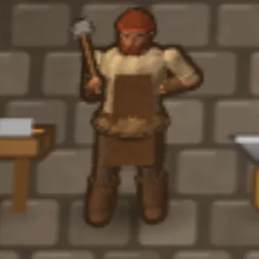
Garrick Ironhand
“Garrick Ironhand. I forged for the old king’s army. Now I forge for anyone with coin and a stout heart.”
The smith repairs and enhances your gear all the way to masterwork, lets you use his forge, and teaches Blacksmithing, Mining and Arms Lore.
Keepsake: King’s Forge Hammer
A smith’s hammer with the royal forge seal, its handle worn to the shape of a very large hand.
“My hammer from the King’s Forge! Left it on the field the day the army broke… Take me along. I’ll keep your foes flat and your steel straight.”
The hardest-hitting companion, with slow, heavy blows.
The Training Hall
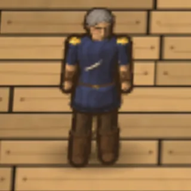
Captain Roderic Vane
“Twenty years in the king’s guard, until a Warlord’s ambush cost me my sword arm’s strength. Now I put better blades in better hands.”
Keepsake: Captain’s Broken Saber
The broken half of an officer’s saber, a captain’s knot still tied to the hilt.
“The Warlord snapped this on my arm and kept the hilt as a trophy… Twenty years I drilled others to hold the line. Time I stood in one again.”
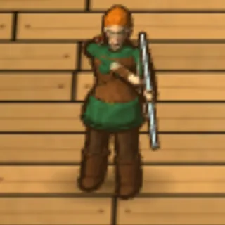
Sylvie Wren
“Sylvie Wren, once the royal huntress. They say my arrows never miss the same stag twice. The Windrunner bow? I held it once.”
Wynn says she once put an arrow through a ring on a pole at two hundred paces, and the king gave her his bow for it. She appears in the hall once you have used a bow.
Joining you
Sylvie has no keepsake. Show her the Windrunner Longbow and she will join you instead.
“I held this once. I swore I never would again… Well. Somebody has to keep you alive out there. Lead on.”
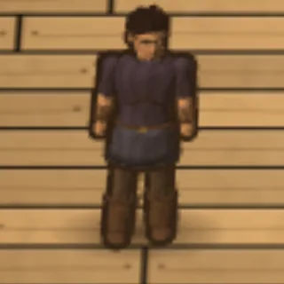
Mick Nimblefingers
“Mick Nimblefingers, to those who ask. Retired from the trade, mostly. The guards pretend not to know me. I teach shadows and light fingers. Get caught, and you’re on your own.”
Keepsake: Velvet Lockpick Roll
A velvet case of fine silver lockpicks, monogrammed with a single flourishing “M”.
“My best picks, lost in a vault job that went sideways… Retired, I said. Mostly. Fine, I’ll come along. Nobody watches their back for old Mick.”
The mage tent
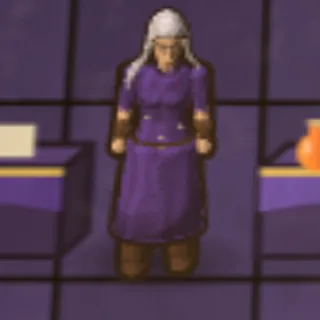
Archmage Ilvara
“Ilvara, last student of the old Tower. I study the Light and what hides from it. Mind and mana grow together, if you are patient.”
The old Tower stood where the snows begin, and its mages could light a whole valley with a word. Ilvara is all that is left of them. Her tent appears once you learn your first spell.
Keepsake: Tower Sigil Shard
A shard of violet crystal etched with runes, humming faintly with old power.
“A sigil of the old Tower. I thought every one of them fell with it… With it my fire will reach farther than ever. Let us go. The Light needs carrying.”
She hurls fireballs that splash onto nearby foes.
The town guard
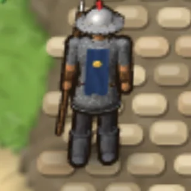
Sergeant Borin Hale
“Sergeant Borin Hale. Twenty years on this wall, and I lost two fingers to a goblin.”
Keepsake: Watchman’s Signet
A heavy watch signet engraved B. H., kept as a trophy.
“The little wretch took my fingers and my ring with them… Twenty years on this wall. I reckon the wall can spare me a while.”
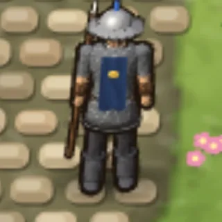
Guardsman Pell
“Guardsman Pell. A farmer’s son. I joined after orcs burned our barn.”
Keepsake: Fire-blackened Horse Brass
A harness brass shaped like a wheat sheaf, blackened by fire.
“That’s off old Clover’s harness, our plough horse… I joined the watch so it wouldn’t happen to anyone else. Let me come.”
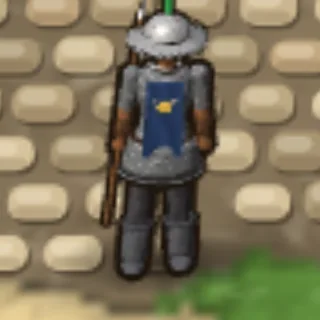
Ysolde of the Marsh
“Ysolde of the Marsh. A swamp scout turned sentry; I know every bog path east and west.”
She swears a heron in the eastern bog is a hundred years old, and talks to it.
Keepsake: Marsh-reed Whistle
A carved reed whistle that mimics a heron’s call.
“My heron-call! I dropped it fleeing a lizardman patrol in the deep bog… Bring me, and you’ll never walk into an ambush blind.”
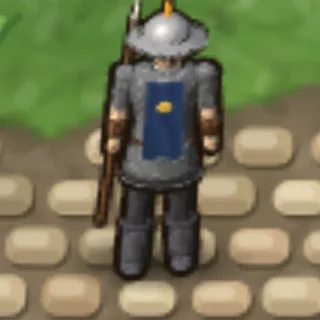
Dunmar the Younger
“Dunmar the Younger. Fresh recruit. Still polishing my first helm.”
Keepsake: Faded Helm Plume
A faded guardsman’s plume bound with a family ribbon.
“Grandfather’s plume! He wore it the year the walls held against the dragon… Take me with you! I’ll prove I deserve to wear it!”
Others you will meet
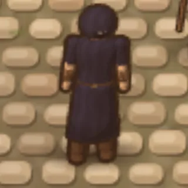
The Hooded Stranger
“A watcher. A debt-collector. Names are heavy things.”
The Stranger appears in the square after you first defeat Gnarlfang the Warlord. They size you up by your best fighting skill, and once you reach Master they send you after world bosses. They remember everything, even when the rest of the world forgets.
King Aldemar
The king of Aethelguard. Only the greatest heroes ever meet him.
Outlaws
Player killers Vorn Blackthorne, Sable Nightwick, Morrow the Ashen, Lyra Redshaft and Kael Bloodsworn, and the thieves Jory Lightfoot, Hesper Dunn and Tam Sixfinger, roam the wilds once you can fight. See Combat.